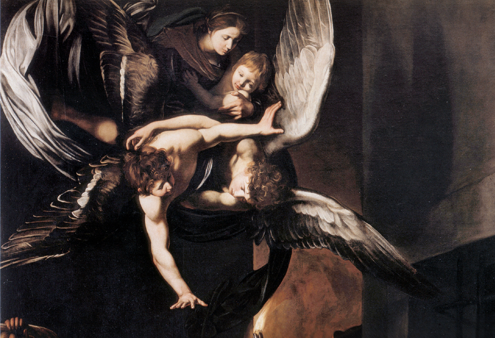

краткая иформация для тех,
кто не готов к зачету по истории искусств, но интересуется картиной Семь деяний милосердия
Вернуться на главную страницу
Семь деяний милосердия

Сюжет
Картина Семь деяний милосердия написана на религиозную тему. Согласно библии существует всего 7 деяний милосердия:
1 Накормить голодного
2 Напоить жаждущего
3 Дать приют страннику
4 Одеть нагого
5 Посетить больного
6 Посетить заключённого в темницу
7 Похоронить мёртвого
Обычно все деяния изображались на отдельных картинах, но Караваджо создал сложную композицию, разместив все на одной картине. Действие происходит на одной из неаполитанских улиц. На картине можно увидеть сразу нескольно разных сцен, каждая имеет свое независимое решение, но всех вместь объединяет Богоматерь с Младенцем и два ангела, наблюдающие сверху за происходящими событиями.
Судьба картины
Работа произвела сильное впечатление на заказчиков, и они поклялись, что она ни за какие деньги не покинет главный алтарь церкви Пио Монте делла Мизерикордия в Неаполе. Ими был также наложен строгий запрет на ее копирование. Полотно никогда не покидало своё место у главного алтаря несмотря на то, что даже за создание копии предлагалась довольно крупная сумма денег.